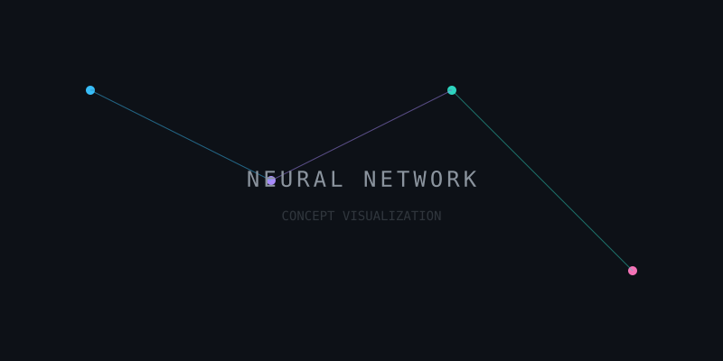

LLM (Large Language Model)
Modelo de Lenguaje Grande.
Son sistemas de IA entrenados con cantidades masivas de texto para entender y generar lenguaje humano. Es el "cerebro" detrás de chats como ChatGPT o Gemini.
Explorando la frontera de la Inteligencia Artificial
Hola, soy Antonio Ruiz. Mi fascinación no es solo por el código, sino por la inteligencia que emerge de él.
Actualmente me encuentro inmerso en el aprendizaje de la Inteligencia Artificial Generativa. Desde entender cómo "piensan" los modelos hasta aplicar técnicas de Vibecoding para crear experiencias digitales fluidas y naturales.
Mi objetivo es dominar la interacción multimodal y las nomenclaturas que definirán la próxima generación de desarrollo de software.
Modelo de Lenguaje Grande.
Son sistemas de IA entrenados con cantidades masivas de texto para entender y generar lenguaje humano. Es el "cerebro" detrás de chats como ChatGPT o Gemini.
Codificación intuitiva / asistida.
Una nueva filosofía donde el programador guía a la IA basándose en la "vibe" o intención del proyecto, permitiendo que el modelo genere la sintaxis compleja mientras el humano dirige la lógica creativa.
Múltiples formas de entrada/salida.
Capacidad de una IA para entender y procesar diferentes tipos de datos simultáneamente: texto, imágenes, audio y video, imitando la percepción sensorial humana.
La base teórica esencial.
Comunicación efectiva con modelos.
Desarrollo asistido por intuición.
Creado por Antonio Ruiz • 2026

*Arte generado por IA representando la complejidad de las redes neuronales modernas.*